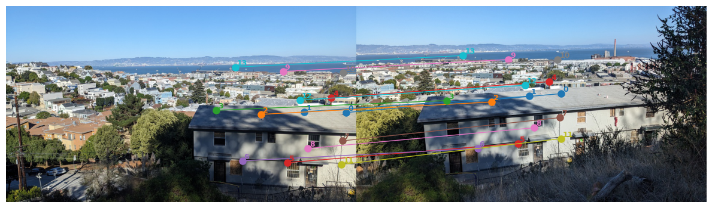

Part A.2: Recover Homographies
Here's a collection of manually-chosen correspondences for two photos from a viewpoint in SF.

In order to calculate the homography matrix H, I set up the matrix equation Ah = b, where A is a 2N x 8 matrix and b is a length-2N vector consisting of the x and y coordinates of the destation points. Each 2x8 block of A consists of the rows [x, y, 1, 0, 0, 0, -xp*x, -xp*y] and [0, 0, 0, x, y, 1, -yp*x, -yp*y] (will LaTeX up in final draft). The computed homography matrix for this example was [[ 5.15e-01, -8.44e-02, 3.95e+02], [-7.73e-02, 8.25e-01, 5.30e+01], [-4.99e-04, -2.67e-05, 1.00e+00]].
Part A.3: Warp the Images
(Didn't have time for my explanation yet. Nearest Neighbors was noticeably faster.)
Here's Nearest Neighbors and Bilinear interpolation for a photo from Cheeseboard.
Here's Nearest Neighbors and Bilinear interpolation for a photo from my kitchen.
Part A.4: Blend the Images into a Mosaic
Here's the two unwarped photos.
I was able to warp the second image to fit the correspondences, but ran out of time recombining them into one mosaic. Here's what I have so far. I plan to use an alpha mask based on bw distance to combine them.